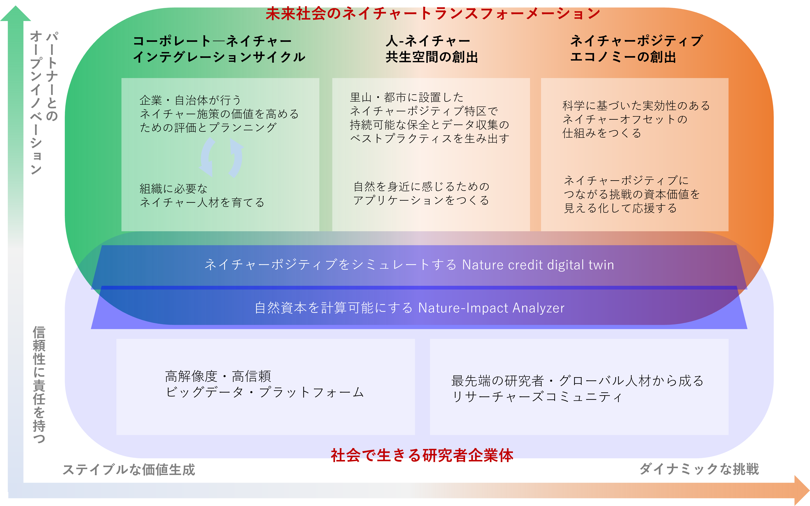

ネイチャーの持続的活用を真剣に社会実装する：NafureX構想
人間の生活は、ネイチャーの恵みに支えられています。
ネイチャーが本来持つ機能（食べ物の豊かさ、炭素固定、水源涵養、地滑り等の災害抑止などの生態系サービス）を保全し、未来へ伝えることが、
社会の持続可能性を高めることに直結するのです。
これまで、環境保全と経済活動は対立すると考えられ、多くの価値観論争が平行線をたどってきました。
この対立を止揚し、経済活動にネイチャーの持続的活用を行う仕組みを実装することがシンクネイチャーの使命です。
具体的には、コーポレート―ネイチャーインテグレーション，
人―ネイチャー共生空間，ネイチャーポジティブエコノミーという3つの目標を掲げています。

その実現のため、NafureX構想の中核をなす2つの技術プラットフォームを定義しました。それが"Nature-Impact Analyzer"と"Nature-Credit Digital Twin"です。
これらは、シンクネイチャーがネイチャーポジティブを実現するために必要であると考える、技術の必要条件を概念化した技術＝哲学です。
自然資本を計算可能にする Nature-Impact Analyzer
自然の恵み＝自然資本は、これまで経済的な価値を持つ財産とはみなされていませんでした。
近年、行き過ぎた開発への反省や、ネイチャーの機能低下による人間社会への影響を背景に、
ネイチャーの劣化が経済的なリスクであることが認識されるようになりました。
シンクネイチャーの技術プラットフォームは、生物多様性ビッグデータを用いて、ネイチャーの恵みと人間活動の相互作用を数値化します。
さらに、社会のバリューチェーンをネイチャーの視点で再定義することで、持続可能な利用に不可欠な科学的エビデンスを提供します。
その数値評価をもとに、ネイチャーの持続的活用を行うための最適な戦略を提案するのが、Nature-Impact Analyzerです。

ネイチャーポジティブエコノミーをシミュレートする Nature-Credit Digital Twin
豊かな人間社会が存続するためには，ネイチャーの恵みを増大させる仕組みを備えた「ネイチャーポジティブ社会」が不可欠です。
現状を数値評価しプランニングする"Analyzer"だけでは、ネイチャーポジティブを経済システムに実装することはかなわず、片手落ちになってしまいます。
そこで必要なのが、企業の営利活動や自治体の保全活動をはじめとする人間の様々な活動を、数値化したネイチャーの恵みと関連付け、ポジティブをもたらす活動に資本を流入させ社会全体で応援する仕組みです。
そのための情報基盤を提供するのが、 Nature-Credit Digital Twin です。
生物多様性ビッグデータをバリューチェーンと結びつけた分析により、国や企業の様々な取り組みを、ネイチャーポジティブの視点から評価することが可能になります。
そして、ネイチャーポジティブにつながる挑戦（代替肉の研究、パーム油の利用削減、工場の省エネ化など）の資本価値を計算し、ブロックチェーンと関連付けたクレジットを発行することで、
ネイチャーポジティブという国際的目標を新たな価値創造の仕組みとして具現化させます。
これまで、ネイチャーを保全する活動は、経済活動を制限するものであると考えられてきました。
しかし私たちに言わせれば、ネイチャーポジティブは経済活動を制限させるものではなく、むしろ新たな可能性を広げるものなのです。
NafureX構想の全体像

これらの技術プラットフォームを実現する道のりは長く、簡単なものではないでしょう。
しかし、必要な要素技術はすでに開発が進んでおり、個別の事例では多くの実績を挙げています。
そしてシンクネイチャーは、研究者としての探求心と腰強な思考力を持ったプロの集まり＝研究者企業体です。
様々なパートナーと連携しながら、ネイチャーの持続的活用を真剣に社会実装する NafureX 構想の実現のため邁進します。
連携組織
# ロゴを入れる
- MS&AD
- PwC
- 積水ハウス
- サントリー
- 日本自然保護協会
協業組織
- TNFDデータカタリスト
- 30by30アライアンス
- 商船三井
return to top